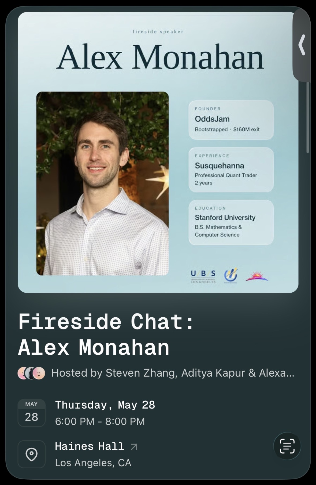

Intro
On May 28th, 2026, UCLA’s Undergraduate Business Society (UBS), along with Horizon – a new UCLA Club centered on bringing successful entrepreneurs and founders to UCLA to speak with students – hosted Alex Monahan to discuss his experience going from graduating Stanford CS, to a 9-5 (or 9-9) quant job, to successfully bootstrapping his own business to a $160 Million dollar exit in 2024 at only 27 years old.
While I technically dropped out of USC in December 2025, I came back and lived in my USC grad school apartment in LA for the summer while I was searching for a full-time job after returning from my Spring 2026 Blue Origin Internship a couple weeks prior to this talk.
I saw an eventbrite link on Viraj Ala’s social media channels – he’s a “man on the street” creator who interviews founders and entrepreneurs specifically – and decided to attend the talk despite the fact that it was at my rival school – UCLA!
I learned a lot of advice from Alex about going from a recent grad at a 9-5 to entrepreneurship and a lucrative acquisition, and am documenting a lot of them here.

The event page for Alex Monahan’s fireside chat at UCLA’s Haines Hall on May 28th, 2026.
What Alex is doing now
Post acquisition, Alex’s main focus is centered around creating content about college entrepreneurship, speaking to students (such as he did in this talk), and mentoring current student startup founders.
Specifically, he’s at UCLA all the time - he lives just across the street – filming “man on the street content” and videos centered around all of those things, with his main format being a real-time “shark tank” format where UCLA students pitch him on their startup ideas.
An example of Alex’s UCLA “shark tank” style content (view on LinkedIn).
His videos and other online posts are packed with a ton of useful insights, so without further ado, let’s get right into it!
Early Life
Alex grew up in Virginia, and ended up getting into Stanford, where he initially studied Pre-Med before switching into Computer Science during his freshman year.
After he switched to CS, he also decided that he wanted to be an entrepreneur, and he tried a ton of different things, but nothing really became a breakout success, at least not to the degree that it would justify him leaving a potentially lucrative 9-5 career.
So after going through a couple of internships, he ended up going into a field called Quant Finance at a company called Susquehanna.
He got rejected from everywhere else he applied to, but that’s fine.
And there’s a huge lesson he wanted to drive home here – that’s the nice thing about applying to jobs: you only need to get one (good one) to go through, and if other companies reject you, that’s fine.
He’s also a big believer in being aggressive with reach out, getting your foot in the door everywhere, interviewing everywhere – whatever it takes to get that one opportunity and compounded experience after that.
How To Think of a Startup Idea
Some of these fundamentals will be repeated throughout this article since Alex kept drilling them down, but one of the questions he’s often asked the most is: “how do you think of a startup idea?”
In Alex’s opinion, it mainly boils down to two primary things:
- You have to be really good at it (“What am I good at?”)
- You have to like it (“What do I like to do?”)
You have to have an edge, and this is where he thinks a lot of people get it wrong.
You can’t JUST work hard. You obviously need to work hard and persist, BUT you must have an edge!
Like with his own startup, OddsJam, he had been doing quant finance, a skillset that played directly into gambling, and had been doing gambling, including games like poker for YEARS before then pivoting to sports gambling before it became legalized.
Long story short, all of the skills which he’d developed for the quant finance world translate perfectly into sports gambling, and allowed him to go about it in a very objective, data-driven way which served him very well compared to the average person.
Instead of winning stock trades, he was using the same methodology to win sports bets, and it ultimately paid off for him with his eventual $160 Million exit.
Monetize (To Validate Demand) As Soon As Possible!
Alex mentioned that a lot of people when starting out in entrepreneurship maybe think that they have a good idea, but many don’t actually validate it, which he thinks is very important.
He’s a huge believer in product-market fit – just like Harry Gestetner from my FanFix articles.
But the main way to actually validate that is to sell early – he’s a big believer that getting people to pay you is the best sign of product-market fit.
Even if you only sell your early version for cheap – like the first version of OddsJam which he mentioned was only like $3.99 a month or something like that – it’s still a lot of work for people to have to get out their credit cards and pay for something.
If they actually pay you – even a little – it's the best indication that something’s impressive.
He thinks that way too many founders try to be like “our product isn’t perfect yet, let’s just be free for a little bit…” and he thinks this is a huge mistake.
Validate through monetizing – even just a small amount – early on, even if the product is a bare minimum MVP at that point.
And once you successfully do that, he thinks you should also do the following:
- Talk to as many people as possible, talk to a bunch of people and get a lot of blunt feedback about your product.
- For example, he talked to thousands of sports bettors, and had even compiled a spreadsheet of about a thousand power users he’d talked to. The second the product launched, he instantly had 100 customers after he blasted out an email to that list.
Obviously there’s not a lot of money since he charged only $3.99 for the first round of subscriptions, but instantly, you have people who are testing the site, giving you money, telling you what to do better, and who will then support it from the get-go.
Get Your Marketing Channels Right
Even when their product was working and had early traction, Alex and his cofounder had reached a point where they’d run out of people from their niche communities who they could message and entice to join their platform.
Doing this only gets you so far, and you’ll probably run out of leads eventually.
One day, this one guy signed up for their product, but also churned.
When people churned, Alex and his cofounder sent an automated email asking “Hey! Why did you cancel (and how can we do better)?” just so they could get feedback on the product and improve it and so on and so forth.
And the specific guy responded by saying “I’m in Florida, there’s no sports markets here (at least not at that time), BUT I sold a golf company to NBC for a lot of money and I’d love to give you some feedback.”
So they got on the phone and he basically was like “how are you marketing” and Alex and his cofounder mentioned that they weren’t doing any basically and were solely focused on engineering and improving the product.
And the guy laughed in their face and said “You’re idiots! You HAVE to figure out how to distribute your product! You have the best product in the world in this category. There’s NEVER been a company that existed without marketing.”
He then proceeded to recommend that Alex and his cofounder should go and make YouTube videos explaining his product or whatever, despite the fact that Alex had 212 followers on a private Instagram account at the time and had never done real content!
One of the key insights and realizations that the guy helped them come to was that “if you can’t advocate for and promote your own product, why would someone else?”
Alex and his cofounder then went on to throw up some YouTube videos, and some just started to take off. After that, the company started growing and doubling just off of youtube, which was crazy, especially since the product didn’t change much!
Once Something Starts Working, Double Down
Then once something starts working – this is kind of obvious advice – keep doing the thing, do it as good as possible, double and triple down, make more content (or whatever marketing you’re doing), while trying to get views, WHILE continuing to improve the product.
After Alex and his cofounder pivoted into YouTube, they went from thinking about engineering and design 95% of the time to thinking about and working on it only ~40% of the time.
Their new thought process most of the time from thereon out was spending most of their time thinking “how do we sell this and get it in front of the millions of sports bettors in the country?”
Why Didn’t They Fundraise?
Alex and his cofounder bootstrapped their business from the very beginning all the way through acquisition.
Why did they do this?
Alex said there were a couple of reasons:
His cofounder had previously raised ($60 million!) for his previous startup and he said that it’s a lot of work! Like, you’re constantly fundraising and emailing investors ALL THE TIME... which is completely unrelated to the actual work of building your business!
While VC funding can work amazingly for a lot of businesses, raising can also be the equivalent of a full-time job for others, so they decided early that they wanted to not raise so that they could spend all their time building instead of raising.
Once they started becoming profitable, they realized that with their business model, they didn’t even need or necessarily know what to do with the money.
Once they started making money and things started taking off, investor calls started pouring in, and everytime they got to the end of a call, investors were like “We want to meet you! Let’s fly you out to San Francisco!”
Alex felt like that would’ve just wasted time, especially since the company was growing like 10% a day and they just wanted to focus on their jobs instead of all this ancillary stuff.
In retrospect, if he wanted to take the business to half a billion or a billion+, then maybe he could’ve taken on VC funding, but that was only in retrospect.
To grow to a $16 billion company for example, you’ll have to do very different things.
And also, as your company grows, your world of potential buyers collapses into a very small number of potential acquirers.
One day in NYC, they made an agreement just to go heads down, grind for 6 months without taking any calls, and “see what happens.” They kept growing, and the same conversation happened every 6 months until their successful acquisition.
Choosing a Co-Founder You Trust
When/if you get a cofounder, Alex mentioned that he thinks that trust is VERY important.
For example, he’s heard stories about friends who started businesses with someone that they met at a networking event, and then that person quits and gets a normal job or disappears off the face of the earth for 5 weeks because they’re not resilient.
The nice thing about working with people you know, or good friends for example, is that you really know them, know their incentives, what they care about, or if there’s any other circumstances in their life that would help/hurt them as a business owner etc.
Alex and his cofounder grew up together in Virginia, and went to Stanford together, so they knew they had shared values along with that familiarity, which ultimately helped them be successful as cofounders.
Hire From Your Email List
When Alex and his cofounder made their first hire, they hired customer support since they were growing exponentially, but while doing so, they were wasting hours every day responding to people essentially as customer support.
They knew that it didn’t make sense, but to solve this, they hired straight from their email list – a very creative idea – since, if they’re obsessed about the product in their free time and always bothering you about it, they’ll probably do great work for you doing it full time, too!
He’s always a big believer in getting EVERY EMAIL YOU CAN, and also that customers are great for hiring from as well.
Partying In Miami Post-Acquisition
When asked why he went back into content only a couple months after the acquisition instead of just retiring or “partying in Miami,” etc like many people do after a large windfall like this, Alex mentioned several interesting things.
When they first got acquired, he did just take a few weeks off to watch Netflix and walk around LA, go to the century city mall everyday, get drinks with interesting people, etc.
But after a while, he said he got bored doing that.
He loves doing content, and also thinks that it’s always fun to talk to and meet a bunch of other smart people.
He also likes doing something productive as opposed to nothing everyday, so he looks forward to staying active in business – whether that’s in content or some other business down the road.
Sport-Betting Was ALL Younger Founders
Harkening back to when Alex said that “you must have an edge”, one of the edges he had when starting a company in the sports betting space is that all the founders are young.
It wasn’t all an industry of 70 year olds, or other types of old money, which gave him a unique edge in his space.
Furthermore, he loved it and had a very unique angle both due to his quant trading background and the fact that he obsessed over it (and related stuff) as a hobby for years before that.
He also was deeply entrenched in the others in the community and had a real sense for what people actually needed, too.
How He Investigates New Opportunities
It took Alex about a year of dabbling seriously in the space before he ultimately had the courage to leave his 9-5 quant job.
He didn’t have an email list in his first few months of sports betting, but then a few months in, he had an inkling that there was something there, but he just didn’t know what it was.
So that’s when he started keeping tabs on people and asked:
- What do people want?
- What problems are there that I can solve?
As mentioned previously, he talked to thousands of people before and after launching his product, so he had a pretty good idea that this was likely something that was potentially worth pursuing and making.
Similarly, when he even makes decisions today, e.g. when he’s thinking about starting a new venture or investing in someone, he’ll talk to everyone at that company, every investor of the company, and even everyone at their competitors and really deep dive into it.
9-5’s Can Be a Great Launchpad
He also mentioned that a common path to entrepreneurship is often working at a “super cool company” – something you see all the time with Google, SpaceX, or many AI Companies (e.g. Anthropic), and so on – is a great way to start the path towards entrepreneurship.
Oftentimes, it’s an engineer who leaves, who has really good credibility in at least some domain.
This makes it much easier to raise and convince VCs to fund your vision, and even in his case, had he himself just tried to go straight from Stanford to entrepreneurship, he thinks it would’ve been very hard for him to raise anything.
Hiring and Delegating
He's a big believer that you have to: “Delegate, not abdicate” when delegating tasks.
This means that when you hire someone, you have to almost certainly put in time with them, train them, watch them, and so on.
And that’s also why he’s a big believer in founders wearing all hats – doing the sales, marketing, fundraising, building the product, designing it, and so on.
He thinks that if you know how to do a job, it’s easier to identify the type of person who can do that job when hiring.
Even with something like sales, if you need a sales rep to sell your product, it’s totally different selling a skincare product than it is selling a SaaS.
Since Alex himself wore all of the hats at his company and understood each role well enough, he was able to better find people who were able to take over those specific tasks he needed offloaded.
Furthermore, he’s also a big fan of “hire slow, fire fast.”
For example, some people might seem like a good hire on paper, but you get on the phone and something seems off.
In his opinion, like in any relationship, if something isn’t completely right, and you’re not fully excited about the hire, it’s probably not someone you want to commit to.
Don’t Spread Your Focus Too Thin!
Alex also mentioned how one of the biggest mistakes he made in the early days of OddsJam was spreading his focus too thin.
He thinks he said yes to too many things early on.
He’s said this on his linkedin and online content a lot - but one of his key insights is that “you have to reject 1000 good ideas and focus on the BEST ONE and put A+ effort into that as opposed to doing a C-job on 10 different things, which is what a lot of people do and that’s why they have terrible businesses (or are on their way out of business).”
When Did Alex Realize He Was Good at Sports Betting?
Long story short, he played a lot of poker for fun and got really good at it.
He even got to the point where he would go into a casino (not the types in vegas, where the odds are definitely against you), have an edge, and would make money long-term.
His company, Susquehanna, had a gambling culture and a lot of smart people – and once sports gambling became legal and they looked at it, they thought it was a good money-making opportunity (for themselves specifically). Alex figured that if all of these very smart people were into it, then that meant to him that it was a legit opportunity.
To be clear, the type of gambling he did was NOT “looking at the TV and saying I want to bet on this specific NBA team or Steph Curry tonight…” It's moreso like trading/quantitative finance.
Like, in quant finance, you don’t look at facebook or a picture of Mark Zuckerberg or an article about either and say “I’m gonna buy facebook stock!”
Instead – in Quant Finance and now in Sports Betting for him, it was very data driven.
It was much more of a math / mathematical thing, rather than an emotional thing – and he was able to prove that certain approaches and strategies were working from that standpoint.
How To Pick Your First Job
One of the most memorable pieces of advice that Alex got from one of his Stanford Professors was to: “take not necessarily the highest paying OR easiest job, but instead take a job where your specific boss is going to spend a ton of time with you, and that your boss is someone you admire and look up to.”
At the time, when he started his job at Susquehanna, his boss was someone he really liked, respected, and looked up to. His boss also spent a lot of time training him, which he thinks was exceptionally valuable for his career and trajectory.
He had a lot of other friends from Stanford who were entering companies but didn’t have this type of mentorship, who didn’t advance, learn, or progress nearly as much since more knowledgeable or senior people didn’t spend as much time with them.
So those are important factors to consider when getting your first job, according to Alex.
Volume is Information
A key insight that Alex mentioned - which I think applies to many parts of life, not just quant finance or sports betting (from the perspective of a sportsbook company) is that:
“Volume is information.”
Obviously he was saying this in terms of both quant finance and sports betting – but I think that it applies to other areas of life as well.
In terms of quant finance, it was setting up custom alerts to track the order flow of other “smart” hedge funds so that they knew what they were trading. If all of the smart hedge funds were buying or selling something in droves, especially if multiple were doing it at the same time, it probably meant that something was there. You wouldn’t want to bet against these guys long-term too much!
Even in sports betting – as horrible as it sounds (which is why I don’t endorse DOING it) – Alex mentioned that for sportsbooks, that’s about letting smart gamblers make SOME money off the platforms, then track their moves, and use that information to make more money off the “less informed” or more casual sports gamblers.
Again – I’m not endorsing sports betting or gambling at all – but hopefully some lessons can be taken and used for good in industries that aren’t zero-sum.
With a New Startup – Sell VERY EARLY
This point - as well as several others - has been hammered home several times now in this article and in Alex’s talk, but he mentioned that selling very early is so important.
Early on in their startup, they were selling – very early.
He thinks that it would’ve been a huge red flag if nobody ever paid.
He thinks it’s a very good “pulse test” when starting any new business.
Even when he was a trader – it’s a lot like if you put a bid out and no one takes your order, it gives you information.
Like, you want to fish for information, and lack of sales is information.
When Did OddsJam Start To Market?
As mentioned before, OddsJam had its initial set of customers primarily from people who Alex and his cofounder knew long before starting the company since they had talked to 100-1000+ people to gain feedback and insights on what products people wanted.
However, that’s not TRULY marketing, Alex said.
Alex and his cofounder (Ankit Goyal) started taking marketing seriously when the amount of customers they had didn’t change for weeks on end, despite working super hard to listen to all of the feedback of their existing customers and implementing the changes they wanted.
Despite making the product as good as possible and listening to each customer’s feedback, they weren’t getting any new traction – as Alex found out, “people don’t randomly find you on the internet, that’s not how the world works, unfortunately.”
Also, he mentioned that unfortunately, despite their product being loved by their existing customers, they’re usually not going to share it for fun unless you incentivize them.
So, they had to figure out the marketing, otherwise they were gonna be stuck making that amount of money every month, rather than growing.
Any Marketing Channel is Legit – Even AI Influencers – As Long As You Can Funnel Attention To, And Make Money For These Companies (Granny Spills Case Study)
One of the biggest marketing lessons from Alex came up when he was talking about how he met the creators of the “Granny Spills” AI Influencer when doing street interviews on FAU’s campus a couple of months before his UCLA talk in May 2026.
Eric Suarez (who I first met in 2023 and outline here) and his Blur Studios cofounder created an “AI Influencer” called “Granny Spills” which explicitly doesn’t hide the fact that it’s AI!
They went from 0 to 1 Million followers in 22 days, with fake AI content that isn’t a real person!
And according to Alex, when he met them in Spring 2026 at FAU (Eric also does “man on the street interviews” for his own channel), Eric mentioned to Alex that Granny Spills was making well over $200k a month IN PROFIT!
This was only a few months after they started in May 2025 and there’s hardly any costs aside from Claude and Midjourney tokens, essentially.
Granny Spills, as far as Alex understands, primarily does brand deals for skincare and beauty company brands – and is a very good return on investment for that AD spend.
Long story short, the marketing lesson here is that companies and brands don’t care how you get them views – if you can get them views and sell their product, they don’t care if it’s AI or some other type of marketing channel. The end goal/result is still the same.
Obviously there’s good and bad ways to do it – don’t do anything unethical obviously, but assuming you’re not going there, AI can be a great marketing channel or tool for businesses.
Give Every Marketing Channel a REAL Test
Alex mentioned that he was a big believer in giving every marketing channel a REAL TEST at least once.
Even if your business is growing already for example, and you’re selling it, it still might be worthwhile.
Like if you’ve never tried paid ads, maybe try paid ads. Maybe you’ll get super cheap leads there for your specific product or service. Or maybe organic will work, or something else.
There might be companies that know a ton about paid ads but nothing about organic, and vice versa, because one or the other works for them.
And with any marketing channel you try, give it a REAL TEST, and make sure you have the right person or people which actually know what they’re doing run that.
But, if you’re working really hard, banging your head against the door and you think that you have really smart people working on the channel and it’s not working, give up (on that channel)!
There’s A BILLION WAYS TO GROW A BUSINESS, and all you need is one channel to work.
Like with OddsJam, paid ads didn’t work super well even though it did for their advisor from Florida who sold his company to NBC. It never hit with OddsJam, whereas organic content worked very well and grew them to millions of customers.
He does overall think that marketing is valuable to think about from the start, since if you can’t figure out how to sell it or even get people to see or know about your thing in the first place, it’s going to be tough trying to grow it.
Don’t Listen To Family, Friends, etc – Only To Your Customer’s Wallets / Credit Cards!
While this is probably the 4th or 5th time I’ve mentioned some variant of this, Alex mentioned again that you should NOT listen to your friends, family, significant other, or so on if they tell you your idea is good or bad.
Sort of similar to Cal Newport’s “Money as a neutral indicator of value” principle which I’ve written about before, Alex mentioned not to listen to the people close to you or to ask people’s opinions, but instead to use your customer’s willingness to pay as the main indicator as to whether your product/idea is good or not.
He essentially said that it’s cheap and easy for those close to you to compliment you or say that your idea is great, but that it’s not really worth that much. He thinks that people lie to your face all the time, so it’s not the most reliable indicator of your idea/company’s efficacy.
But customers – they’ll tell you the truth, through their credit cards.
Like they’ll just straight up cancel, or they’ll pay you in the first place.
And if they do cancel and you ask them for feedback, they’ll often give “excuses” like “my credit card stopped working randomly” or “I moved out of the country” and so on, so even then when you ask, they won’t always be forthcoming, in his experience.
Have A Path To Profitability
In response to the same question, Alex also emphasized that having a path to profitability is usually very important with a startup.
He’s seen so many companies – especially in spaces like Biotech and so on – that assume that you can just raise forever, or that if they reach some technical milestone or “get FDA approval” or so on, “then we’ll be able to raise $150 Million!”
The problem – not true in all cases obviously – in most cases, is that most VCs don’t want to wait that long for a return, or don’t think those companies can return at all, so many companies like this can’t even command or raise 1/10th of their previous valuations because it’s too long of a bet.
On the other hand, for example, lately AI has been something that VCs have been very willing to invest in since the potential ROI is both much higher and could come much sooner – with Anthropic being an example which many VCs wish they got in earlier.
So make sure your company is profitable (or has some path to profitability) and be able to stand on your own two feet, since if you’re not profitable or have a clear path to that (even if you have revenue), VCs won’t touch you.
Look at Y-Combinator Companies Today vs. 10 Years Ago!
As a follow up to the previous section, he mentioned the types of companies Y-Combinator (which you can look at) invested in only 10 years ago versus today is totally different.
Like, almost 100% of everything they’re investing in today is either an AI company or something AI-adjacent, whereas that wasn’t the case 10 years ago.
The tide can shift significantly, and even if you successfully raised before, those tides can negatively affect your Series B and Series C rounds down the line.
Can You Create a Startup as Non-Technical Person?
Alex said yes, absolutely, you don’t need to be a technical person (e.g. a CS or Finance major) to found your own startup – and he gave a really cool example to illustrate this.
For example, he mentioned that his Fiance works at a Talent Agency with a lot of creators where they live in Los Angeles. And out of those, there’s a lot that end up making a million dollars a year or something like that.
With a lot of them, they just cater to one specific type of audience and just cater to that – like, there’s a creator who works with primarily salad dressing related brands since they just figured out how to get in front of healthy people and that’s their audience, and they’re very good at social media in that case.
So you don’t have to be technical at all – even Steve Jobs himself wasn’t, but obviously this is something where you can cherry pick examples to argue for both sides of the argument.
Like, one of the students mentioned that they really liked a particular finance influencer from their home country, and Alex mentioned that the influencer would be great for advertising for fintech brands for example, but probably not for a skincare brand.
So, a lot of it depends on the founder too. Everyone talks about product-market fit – which is important – but Alex is also a big believer in founder-market fit too.
For example, Alex probably isn’t the right person to start a makeup company, for obvious reasons – he doesn’t know anything about it, isn’t passionate about it, and so on.
Long story short, you don’t have to be technical, you just have to play towards your strengths.
How Do You Know When To Pivot?
This goes back to what he said in his bit about the marketing side of things – which is that you want to give something a REAL TEST.
Like if you run paid ads with someone who you know is competent, and it doesn’t work and you’re blowing through a certain amount of money – you’ll realize at some point that if you’ve spent that time and effort with no returns, you can probably close that door safely and say that it’s not the right door for our business to grow.
And if you try paid ads for example, don’t just hire some random person off the street to try that – try someone who actually REALLY knows what they’re doing in order to give it a good try.
It’s the same thing with a business – if you think that something’s good, try to “knock on that door as hard as possible” but at some point, don't be stupid – if no one’s buying from that channel, he’s not going to continue “knocking” on that door even if he thinks he’s taking really smart approaches with it.
Like even if you get millions of views on influencer videos for example, and no one’s buying his product – maybe it’s his site, maybe it’s the funnel, or marketing channel, or maybe he just isn’t building something that anybody wants.
How To Take Customer Feedback
Again, feedback from friends, family, parents, or sometimes professors or investors even, doesn’t matter that much according to Alex.
What matters is: “What do your customers say?”
If you’re trying to build something and are talking to people in that niche, eventually they’ll tell you that what you’re building (or what already exists out there) probably sucks in some way, and you can then ask them questions like:
- What do you want to see then?
- What needs improvement?
- What problems do you have?
And be open minded when taking the feedback – if you’re not willing to take feedback, then people won’t give it to you or will withhold the worst of it.
Because if you ask someone’s opinion, and that someone can’t tell you the truth without you tearing up or giving them a hard time, then they’re going to lie to you and tell you that everything you’re doing is “great!”
If you are dealing with customers who will give very blunt or negative feedback – that’s good feedback.
You can use that as a signal into what else may work, and that’s very valuable.
How To Balance Taking Feedback vs. Believing In Your Own Ideas?
Not to beat a dead horse, but Alex again emphasized that this is why he’s a big believer in monetizing early.
Like if people won’t pay pre-orders for something, or pay for an MVP product that’s only “20% of the way there” with super basic features, if you can’t get someone to pay you even a small amount of money like a few dollars or something – “you don’t need to try to print Bezos money over there” – if you can’t get people to pay, that’s usually an indication.
Like, he’s a big believer in contrarian ideas – where you have the vision that something will be a big industry, even if no one sees it – but he also thinks that you need to still go about it strategically, and say “here’s the business plan, here’s the tech, let’s get out an MVP and see if people pay.”
Like, even if it’s a TINY amount of money at first – like OddsJam’s $3.99/month subscription – that’s fine. You don’t have to conquer the world, and most businesses start out super small and niche anyway!
If your idea works, being contrarian can be great since you don’t have competition and all that, but at the same time, if people hate your product and/or you’re not getting it in front of them and if they’re not buying or are churning aggressively, then you’ve got to listen to that.
How To Believe In Yourself When You’re Not Seeing Results?
Alex thinks that with this, it’s about “trusting the process.”
Like for example, when you’re in high school and working hard, you don’t see the result of getting into a really good college or getting a scholarship right away (albeit I guess at least there, you have grades sort of as an indicator/scoreboard).
Same thing with business – you can put in all this work, you will put in a lot of work, but not necessarily see the payoff right away either.
His process, as he defines it, is to give everything a test, and once you’ve given something a test, and it’s still not working, you have to move on.
Again, life is short, and you only need one marketing channel to work, you only need one business to work, you only need one product line to work.
Like, a lot of people pitch ideas, want money for investment, and pitch ideas for a product that does 50 different things, and all 50 things suck, are irrelevant, and don’t solve a problem. He thinks that it’s much better to do one thing really well and just figure out what that one thing is through the above process he outlined.
Part of it is about not being glued to any particular idea – it’s about giving things a real test, being glued to the process of discovering the things that do work and which product lines are actually good, and not getting emotional or stuck in the sunk cost of things if any particular idea is not working or so on and so forth.
He also emphasized again that there’s SO MANY potential pathways to success and winning ideas, and that you only need to end up on the right one once. Many people however, whether because of ego or what not, don’t take that feedback and get too stuck on ideas that don’t work.
Also, to answer the original question more directly, results are always lagging, as with most things. But if you stick to the discovery process he’s outlined here, you’ll eventually discover what works and be able to double and triple down on it.
My Question To Alex – About “Hacking The Corporate World To Become An Entrepreneur” In The Space Industry
Near the end of the talk, I introduced myself as a PhD student in Aerospace/Astronautical Engineering about to work full-time in the commercial space industry, and, taking inspiration from Zack Honarvar’s “How To Hack The Corporate World to Become an Entrepreneur” 2018 talk which he recommended to me in 2022, I asked something along the lines of:
My goal in the future is to become a (successful) founder. My question is: I’m going into the space industry full-time soon – I just interned for Blue Origin and am interviewing with several top space companies for full-time roles. How can I sort of “hack the corporate world” to become an entrepreneur? Like, how can I use that as a launchpad to entrepreneurship in my industry?
Alex started off by saying that Blue is “a very good company by the way!” lol (along with the others I was interviewing with at the time)
For his answer to my real question, he started off by saying that while a lot of people do successfully drop out from undergrad or even high school or so on, most people that go down that road fail.
A lot of people tell him “I could never work a 9-5!” but working a 9-5 won’t preclude you from entrepreneurship at all – like Alex himself worked one for a while at Susquehanna and he finished his bachelors at stanford (before skipping his master’s), so he’s not so extreme on all of these things.
One thing which he thinks will be helpful to think about is: Are you learning? (in whichever job or jobs you’re currently in)
Like with him, he learned A LOT at the beginning of his job at Susquehanna, but a lot of that tapered off once he was trained and it was time for him to go make money.
Although overall, he’s a big believer in that if I’m learning a lot – especially if I end up at an Elon Musk company (or one of its derivatives) – then I’m potentially going to be able to spin that off into my own thing eventually, once I have experience there.
Overall, he thinks that the image that most people have in their minds of entrepreneurs when thinking of starting a company – sitting down and brainstorming ideas as a group – is mostly incorrect.
It does work for some people, but he’s a much bigger believer in “going into and going through life and a job”, as he was with Susquehanna, along with hobbies and stuff he did for fun in his free time, and thinking about “what can I do to make this better?”
Obviously you need to have an edge in whatever you’re doing – like when he was at Susquehanna, one of the first things he thought about was “I should make better trading software!”, but obviously that wasn’t a great idea since the company had over a dozen quants from top schools, and he wouldn’t have an edge over them.
So he’s a big believer in: in almost every company, you can think of “what are they doing wrong and where am I seeing real pain points coming up?” and verifying that with real feedback.
Overall, the lesson here is that he thinks that:
“I’m a big believer in that opportunities present themselves. You don’t always seek them out.”
This is a profound insight and even relates to what former SpaceX Director and NASA Astronaut Garrett Reisman told me with his advice about breaking into space entrepreneurship in 2022, where he essentially said to work at a top newspace company or rapidly scaling startup for a few years, understand the model and their painpoints/bottlenecks, and create a company that addresses that pain point (or adjacent ones) that you discover while working there.
Like, even Alex himself said he tried really hard before to “rack his brain” for “what’s my billion dollar business idea” type of thing, and when the good idea finally came, it was more serendipitous and emerged from what he was doing rather than from actively brainstorming or seeking it out directly.
I also asked a quick follow up question about how it might be different in the space industry since you almost always need to raise money since it’s capital intensive (as opposed to SaaS, etc.).
He mentioned that while some industries require capital, the upside can certainly be higher, even if you own a smaller % of the company overall.
And while he gave the disclaimer that he hasn’t sold a $1 Billion+ company himself and can’t fully speak to it, every company that’s valued over $10 Billion has raised some form of investment capital at some point.
And to finish off, he went back to his point that opportunities present themselves.
Like with startups, if you’re good at your job, people will try to poach you, and as you work in an exciting field in an exciting company for long enough (and/or combine it with your hobbies, like Alex with Poker), then windows of opportunity to start something will naturally come up.
He also mentioned too, that sometimes, the best starting point for some businesses is to do a very small acquisition, e.g. if a space company is running out of cash (since that happens), that could be a good opportunity if the original company wasn’t able to raise since they didn’t get far enough on their own.
Go Into Business With Your Friends! (Most of The Time)
When asked about finding a cofounder again, and how to pick it, Alex re-emphasized how going into business with your friends can be a great idea.
Many people say NOT to go into business with your friends, but he disagrees.
Obviously it’s easy to say this when things go well, as it did in his case with his cofounder, but one of the good things about it is that you can likely trust them significantly more than if you just try and go into business with a random cofounder or someone you meet at a networking event and so on or know less well for whatever reason.
Sometimes it can obviously be toxic, but a lot of the time, starting a company with friends or people closer to you can be a huge benefit since you have more in common, more to talk about, and if you’re friends and would hang out anyway, it allows you to spend more time with each other and so on and so forth, and potentially to have more fun in the process.
Take The “Risk” While You’re Young
Alex mentioned that he’s a big believer in that “when you’re young and have no responsibility, no mortgage, no kids, there’s no risk,” and you should take the “risks” while you’re young.
Obviously many of the biggest companies out there were started by people with families, so there’s always exceptions, but he really emphasized to us that we should take the risk now (and he was only 29 and didn’t have kids as of the time of this talk, so he wasn’t that much older than us!).
Time Management – EVERYONE HAS WASTED TIME THEY CAN CUT OUT
He finished off by mentioning that all of us have time we can cut out and that time management, like “cutting out crap,” is very important.
He mentioned that EVERYONE can stop doing certain things as much and that EVERYONE HAS TIME TO CUT OUT.
Like, if you’re truly in love with an idea and a business, “it’s crazy how much output you can have.”
For example, do you really have to walk to lunch? Can you just doordash it instead or whatever? Do you really have to scroll LinkedIn or Social Media or read news that has no relevance to your success whatsoever? Or when going to the gym, do you have to waste time watching TV for 30 minutes everyday instead of doing your real workouts and sets?
In his opinion, there’s a lot of things that can save you time, and additionally, there’s a lot of time you can get back if you’re very motivated by a particular problem.
Like when he was at Susquehanna, he was trying to pass a lot of the time by and waste it and he would say “ahh, there’s not much to do, so let’s just check instagram or this news source or this other random thing” and so on just to “make the day go by.”
But when you’re REALLY glued to a problem, it’s crazy how much time there is in the day!